Extended phase graphs: operators#
The configuration-state formalism blochsim’s kernels implement, operator by operator, and how each tissue term enters. What the kernels hold and leave out is summarised on Extended phase graphs; how the operators are packed and run is Kernels. The notation is Weigel’s review [2].
Dephasing#
A voxel is an ensemble of isochromats. A gradient gives each a Larmor frequency that depends on its position, so over an interval the phase they acquire is linear in position: the ensemble winds into a helix and the voxel sum falls. A gradient of the opposite sign unwinds it.

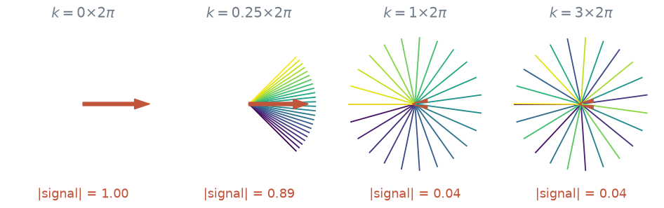
Isochromats across one voxel, in the transverse plane, after gradient areas winding zero, a quarter, one and three turns across it. The arrow is their sum, which is the signal. Past one full turn the sum is near zero while the ensemble remains ordered.#
The winding is \(k = \gamma \int G\,\mathrm{d}t\), the k-space coordinate of imaging. A gradient acts on the ensemble only by changing \(k\).
Configuration states#
Because the phase is linear in position, the transverse magnetization across the voxel is a sum of spatial harmonics labelled by \(k\). With \(M^{+}(r) = M_x + iM_y\), the configuration states are
and the measured signal is \(\tilde F^{+}(0)\). This is the configuration-state treatment of echo trains of Hennig [1].

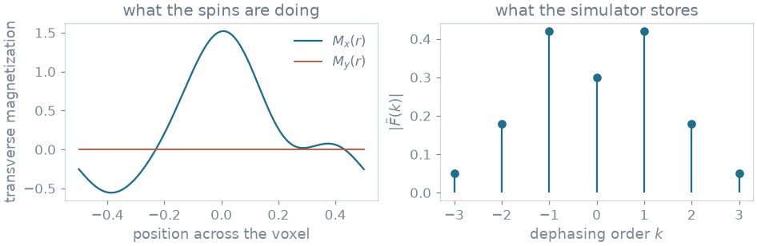
Left, the transverse magnetization across a voxel part-way through a sequence. Right, the same state as configuration amplitudes. A sequence that winds by whole turns populates only integer orders.#
The cost of the simulation is the number of orders the sequence populates, not a spatial resolution.
Three families of state#
The two conjugate halves of the transverse magnetization move in opposite directions under a gradient and are tracked separately as \(\tilde F^{+}(k)\) and \(\tilde F^{-}(k)\). Longitudinal magnetization is modulated across the voxel too – a pulse can store a dephased transverse state along \(z\), where it neither dephases further nor decays with \(T_2\) – so it has states \(\tilde Z(k)\).

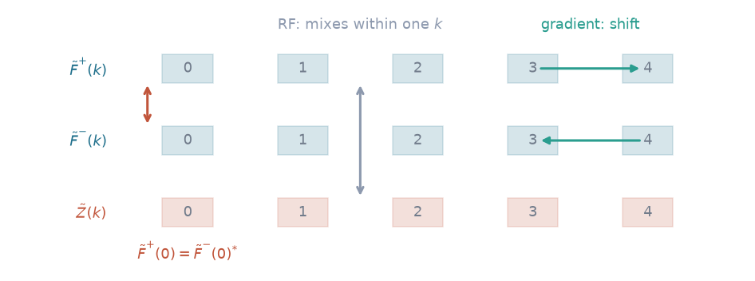
The state of a voxel: three families over the integer dephasing orders. A gradient moves populations along the rows in opposite directions; an RF pulse mixes them within a column. At order zero \(\tilde F^{+}(0)\) and \(\tilde F^{-}(0)\) are complex conjugates, which is why order zero needs a rule of its own in the shift.#
RF pulses#
Instantaneous rotation#
A hard pulse of flip angle \(\alpha\) and phase \(\varphi\) acts identically on every order, as one 3x3 matrix applied to each column:

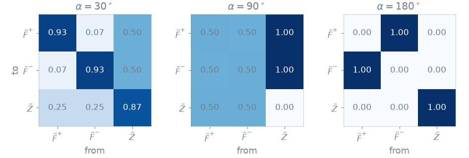
The magnitude of \(\mathbf{T}\) at three flip angles. 180° swaps the two transverse families and inverts \(\tilde Z\). 90° refocuses half, leaves half dephasing, converts longitudinal magnetization into transverse, and stores half of the transverse along \(z\). A small flip angle leaves most of each state in place.#
Every pulse other than 0° and 180° splits each populated state three ways, so the number of pathways grows with each pulse until relaxation and truncation remove the weakest.
The flip angle is the prescribed one times the voxel’s \(B_1\)
(b1), and the phase is the event’s plus the voxel’s transmit phase
(b1_phase_rad). An inversion is scaled by inversion_efficiency.
Transmit arrays#
With several transmit channels the field in a voxel is \(B_1(v, s) = \sum_c S_c(v)\, w_c(s)\) for channel sensitivities \(S_c\) and the complex weights \(w_c\) of shim \(s\). When every channel plays the same waveform (static parallel transmit) the spatial factor leaves the pulse integral, and the rotation is a flip of \(|B_1|\) times the nominal one about an axis at \(\arg B_1\). The combination is a complex sum, done before the kernels, so a gradient reaches the sensitivities and the weights by autograd. Two channels in antiphase leave the voxel untouched; summing magnitudes and phases separately would not.
Integrated rotation#
A shaped pulse under a slice-select gradient acts on a spin off the slice centre about an axis that is neither transverse nor the same everywhere. Its rotation is the Cayley–Klein pair \((a, b)\), integrated from the waveform ahead of time and tabulated over slice position and effective flip angle:
Flip angle and \(B_1\) enter only through their product, since only the transverse part of the effective field \((\omega_1(t)\, s, 0, \gamma G z)\) carries the scaling \(s\). 180° at \(B_1 = 0.7\) is the rotation of 126° at \(B_1 = 1\).
The RF phase factors out: turning the pulse by \(\varphi\) is \(b \rightarrow b\, e^{-i\varphi}\), so the table is built at zero phase.
64 flip-angle knots, read by cubic Hermite interpolation with the slope stored
beside each, carry a windowed sinc to about \(10^{-8}\). Positions are in slice
thicknesses, the passband being \([-0.5, 0.5]\), and the off-resonance a
position adds is the definition’s bandwidth_hz times the position. A
definition with no bandwidth selects nothing and is the same at every
position.
The RF definition chooses the mode (RfMode). A rectangle with no bandwidth
is INSTANT, since integrating it lands exactly on the hard pulse, and a
tabulated one read between knots would not. Any other single-channel
definition is PROFILED, and a definition with one waveform per channel is
DYNAMIC. A profiled pulse is integrated at the slice centre unless
across_slice gives positions, in which case the signal is the mean over
them.
This is the hybrid Bloch–EPG treatment of Guenthner et al. [4]. A tabulated
pair is a pure rotation: relaxation, precession and exchange during the pulse
are not in it. SampledPulse() plays the waveform as one hard
pulse per sample with free precession between them instead, which is second
order in the dwell.
Per-voxel rotation#
A pulse whose channel weights vary while it plays (kT-points, spokes) does not factor into a flip and a phase: its effect on a voxel is a rotation about an arbitrary axis. It is integrated per voxel from the voxel’s own sensitivities, and, with positions, per slice position too. A static shim beside a dynamic pulse is refused.
Gradients#
A gradient changes the winding, which in this basis is a shift by whole orders:

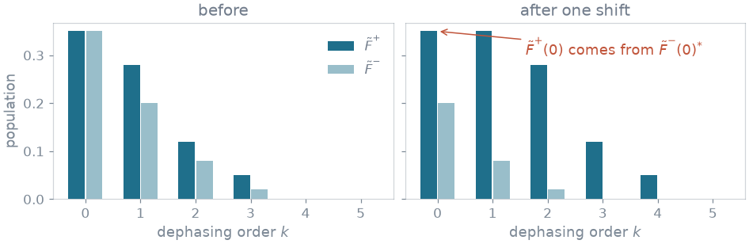
One unbalanced gradient. Transverse states move up one order in \(\tilde F^{+}\) and down one in \(\tilde F^{-}\). The order-zero entry of \(\tilde F^{+}\) is refilled with the conjugate of the state that moves down to order zero in \(\tilde F^{-}\).#
The event action word (EventAction) says which shifts the sequence makes:
CRUSH_BEFORE and CRUSH_AFTER around a refocusing pulse, SHIFT_AFTER
after a readout. SPOIL_AFTER sets every transverse order to zero instead,
the ideal spoiling a spoiled gradient echo assumes of its spoiler and RF phase
cycling together. Every shift is one order: the sequence has one crusher
moment, crusher_dephasing_rad across voxel_size_m, which is what diffusion
and flow are scaled by.
Relaxation and recovery#
Between events transverse states decay by \(E_2 = e^{-\Delta t / T_2}\) and longitudinal states by \(E_1 = e^{-\Delta t / T_1}\). Recovery adds magnetization with no spatial modulation, so it enters \(\tilde Z(0)\) alone.

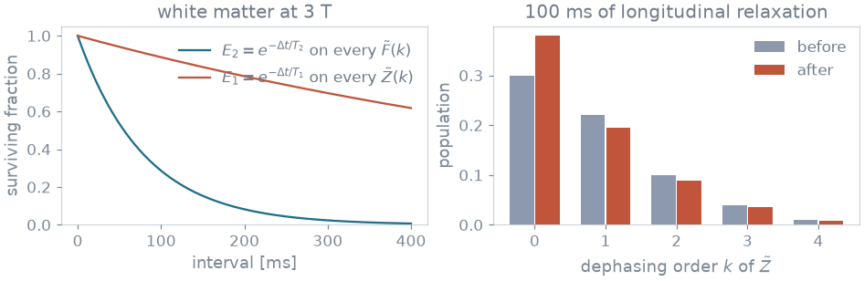
Left, the two attenuation factors for white matter at 3 T. Right, 100 ms of longitudinal relaxation on a set of \(\tilde Z\) states: every order is scaled by \(E_1\), and only order zero gains \(M_0(1 - E_1)\).#
Relaxation times enter as rates \(1000 / T\); a non-positive time is clamped to a small positive value, so a voxel of zeros in a measured map gives no signal rather than NaN.
Phase graph#
Plotting \(k\) against time draws the pathways. Between pulses every transverse pathway moves at a rate set by the gradients; at each pulse it continues, reverses, or is stored along \(z\). Wherever a transverse pathway crosses \(k = 0\) there is an echo, and the sample is the sum of every pathway crossing there.

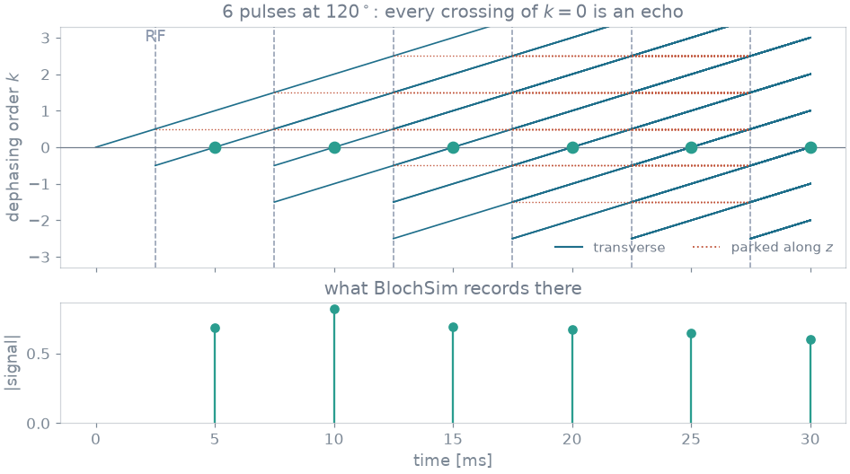
Above, the phase graph of six refocusing pulses: solid lines are transverse pathways, dotted lines magnetization stored along \(z\), dashed verticals the pulses. Below, the echo amplitudes blochsim computes. From the fourth pulse on, each echo contains direct spin echoes and stimulated echoes.#
With refocusing angles other than 180°, stimulated-echo pathways spend part of their time along \(z\) and arrive with less \(T_2\) decay than their echo time suggests, so the train is not mono-exponential.

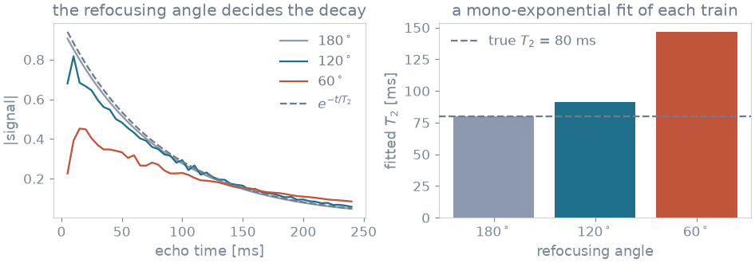
Left, a 48-echo train at three refocusing angles beside \(e^{-t/T_2}\). Right, the \(T_2\) a mono-exponential fit of each train returns. Only the 180° train recovers the true value.#
Truncation#
After \(n\) shifts no state beyond order \(n\) exists, and attenuation makes the
far orders negligible before that. The orders carried are states on a
Simulator and nstates on EpgEngine.simulate; a
simulator refuses nstates. Left unset, the count is
\(\max(8, \min(64, 1 + n_\mathrm{rep} n_\mathrm{shift}))\) for \(n_\mathrm{rep}\)
repetitions of \(n_\mathrm{shift}\) shift actions each.

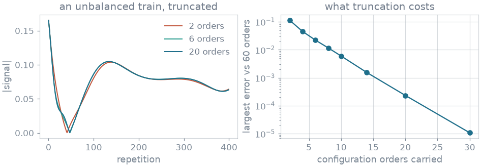
Left, an unbalanced fingerprinting train carried with 2, 6 and 20 orders. Right, the largest error against a 60-order reference, which falls geometrically with the number of orders.#
Off-resonance and field spread#
\(B_0\) (b0_hz) precesses the transverse states by \(-2\pi B_0 \Delta t\) over
each interval, in the frame the pulses define. \(T_2'\) (t2_prime_ms) is a
Lorentzian population of frequencies of half-width \(1/T_2'\) in angular
frequency, whose average over the voxel is \(e^{-|\tau|/T_2'}\) in the time
\(\tau\) a sample has gone unrefocused. A configuration order carries the
winding a state has been through but not the elapsed time, so the spread
cannot be carried by the states.
Where the dephasing order advances at one steady rate – every stretch between two pulses whose transverse states survive winds the same orders in the same time – the order also stands for time, and both terms are applied to the samples as one complex factor \(e^{-|\tau|/T_2'}\, e^{-2\pi i B_0 \tau}\) with the signed unrefocused time \(\tau\) the packing keeps. A gradient echo then decays at \(T_2^*\), a spin echo is left at \(T_2\), and the decay grows and recovers either side of each echo. A balanced train, which keeps its coherences unwound across a pulse, and a train whose repetitions last unlike, do not wind at one rate: \(B_0\) is then carried through the states, and a \(T_2'\) is refused.
Second pools#
The semisolid pool and the chemically exchanging pools are the extensions of
Malik et al. [3], counted as in BART’s Bloch–McConnell model: the free water,
up to four exchanging pools (pool_b to pool_e), and a semisolid pool. Each
second pool exchanges with the free water and not with another, and the
fractions share the voxel, so they cannot sum past one. A pool’s fraction is
the gate on it: at zero it is left out of the kernels.
Semisolid pool#
The bound pool (bound_fraction, bound_exchange_hz, t1_bound_ms) has no
transverse magnetization. \(F^\pm\) stay single-pool; \(Z\) becomes a 2-vector
with \(Z \leftarrow \mathbf{E}_1 Z\) and
\(\mathbf{E}_1 = \exp\{(\mathbf{K} - \operatorname{diag}(R_1))\,\Delta t\}\),
taken in closed form: for a 2x2 generator \(\mathbf{L}\), with
\(\tau = \operatorname{tr}\mathbf{L}/2\), \(d^2 = \tau^2 - \det\mathbf{L}\),
and \(d^2\) is a sum of non-negative terms, so no complex branch arises.
RF saturates the pool at a rate set by the pulse power and the absorption lineshape at the pulse’s offset less the voxel’s \(B_0\). The lineshape is the super-Lorentzian,
with \(T_{2b} = 12\) µs a model constant, tabulated over \(|\Delta f|\) and read by cubic Hermite interpolation. Inside a cutoff near resonance, where the integral diverges, the table is filled by a spline mirrored about resonance, which keeps it even and its slope zero there. What a pulse deposits per unit of flip angle squared, \(-\pi \gamma^2 B_{1,\mathrm{rms}}^2 \tau\), is a property of its shape.

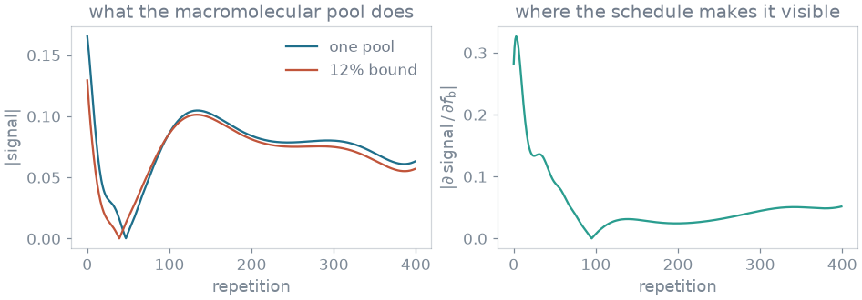
Left, a fingerprinting trajectory on white matter with and without a bound pool holding 12% of the magnetization. Right, the derivative of the signal with respect to the bound fraction.#
Chemically exchanging pools#
An exchanging pool (pool_b_fraction, pool_b_exchange_hz, t1_pool_b_ms,
t2_pool_b_ms, pool_b_shift_hz) carries transverse states and sits at its
own chemical shift from the free water, which sits at \(B_0\). The transverse
step for one such pool is the 2x2
\(\exp\{(\mathbf{K} - \operatorname{diag}(R_2) - 2\pi i \operatorname{diag}(\Delta f))\,\Delta t\}\),
by the same closed form with complex entries; \(\cosh d\) and \(\sinh d / d\) are
even in \(d\), so the branch of the square root does not reach the result. A
pulse rotates both pools alike, and the ADC reads the sum over pools.
With the semisolid pool and one exchanging pool, only \(Z\) sees all three, and its 3x3 exponential is formed in closed form in double precision: its eigenvalues are real and non-positive by detailed balance, and float32 loses accuracy like the square of the interval. With more than one exchanging pool, the relaxation and exchange operators are tabulated per voxel and per interval length.
Diffusion#
Over an interval a state at order \(k\) accumulates a b-factor weighted by
\(k^2\) while longitudinal and by \(k^2 + k + 1/3\) while transverse [2]. The
rate is \(D\,(\phi / L)^2\) for the crusher dephasing \(\phi\)
(crusher_dephasing_rad) across a voxel of \(L\) (voxel_size_m), so \(D\) in
µm²/ms enters as \(10^{-9}\) m²/s. The longitudinal order zero is not damped;
the transverse order zero is, with weight 1/3. A dephasing of zero leaves the
term out.

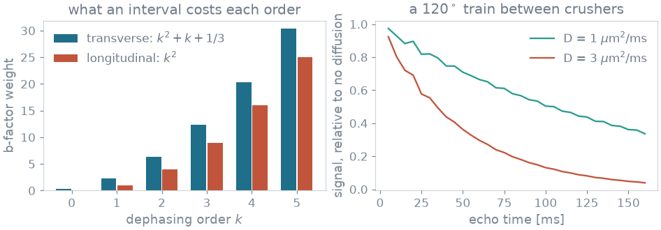
Left, the weight one interval gives each order. Right, a 120° train between crushers winding 20 turns across a 1 mm voxel at two diffusion coefficients, relative to the same train without diffusion.#
Flow and washout#
A velocity \(v\) (velocity_m_per_s) drives two terms through different
geometry. Flow dephasing turns a longitudinal state at order \(k\) through
\(-k\,(\phi/L)\,v\,\Delta t\) over an interval, and a transverse one through
\(-(k + 1/2)\,(\phi/L)\,v\,\Delta t\), half an order further along the
gradient; it needs the crusher dephasing, and leaves \(\tilde Z(0)\) alone. Washout replaces the voxel’s spins at the
rate \(|v| / L\) whether or not a gradient plays, with spins that are relaxed
and unexcited, which is an affine map of the shape longitudinal recovery has,
and enters as a scaling of the relaxation factors. A voxel that turns over
within one interval is clamped. Without voxel_size_m neither term acts.